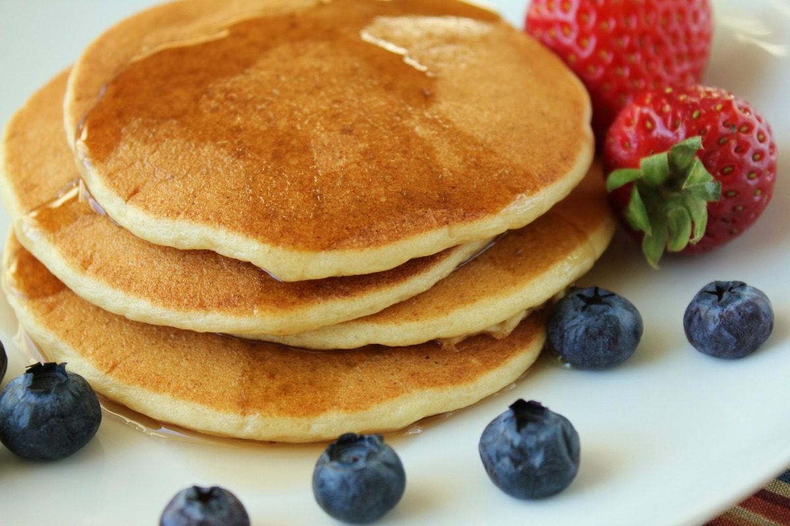

Gluten Free Pancakes

Do you need some scrumptious diddliumptious pancakes in your life?
These Gluten Free Pancakes are simple to make, and taste great.
Using straightforward ingredients, you can still get fluffy pancakes with a decent texture. If you do it right, most won't even know they are gluten free.
Make sure that your ratio of Almond Flour to everything else is spot on. It seems like the correct proportions of Almond Flour is what makes this recipe work just right. You can use substitutes for the milk with whatever milk substitute you would like(with varying results). The fluffiest pancakes can be made with Oatmilk. Yes, even fluffier than with real milk. For some reason, the oatmilk provides additional moisture and fluff. No clue why. Enjoy!
Ingredients
- 1 Cup Gluten Free Flour (Bobs Red Mill GF 1-1 is my Favorite)
- 1/3 Cup Almond Flour
- 1 Tablespoon White Sugar
- 4 tsp Baking Powder
- 1/2 tsp Salt
- 2 eggs
- 1 Cup Milk
- 1/2 Cup Oil
Instructions:
- Mix together the dry ingredients in a mixing bowl
- Add all of the wet ingredients to the dry ingredients, and mix the wet ingredients together a bit, making sure to break the eggs up before fully mixing into the dry ingredients
- Check the consistency of the mix. If it is very thick or very runny, adjust by adding milk or additional Gluten Free Flour.
- Add some Cinnamon if you would like to make it a little bit sweeter
- Put mix onto pan/griddle and cook. Medium heat seems to work best. Too high of heat and it creates big air holes in the pancakes and you lose the fluff
- ENJOY!